Duality, Wasserstein-1, and Semi-discrete OT
Why duality matters
Kantorovich relaxation turns OT into a linear program. Its dual exposes functions rather than couplings.
This is useful because dual potentials:
- certify optimality,
- define gradients of OT losses,
- produce W_1 witnesses and GAN critics,
- drive semi-discrete algorithms.
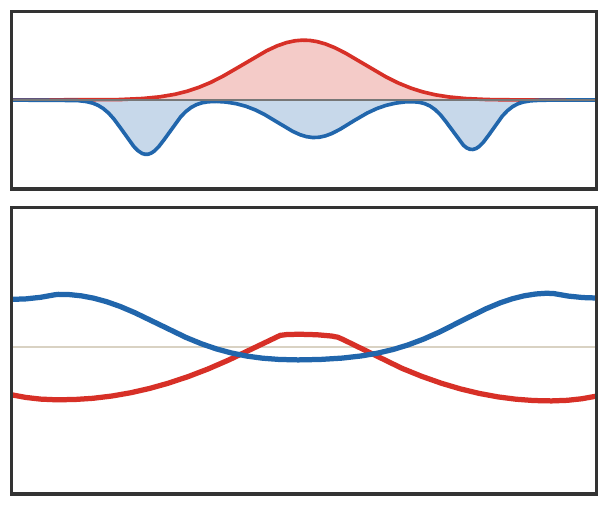
Roadmap: duality
1. Duality

2. Wasserstein-1 and IPMs
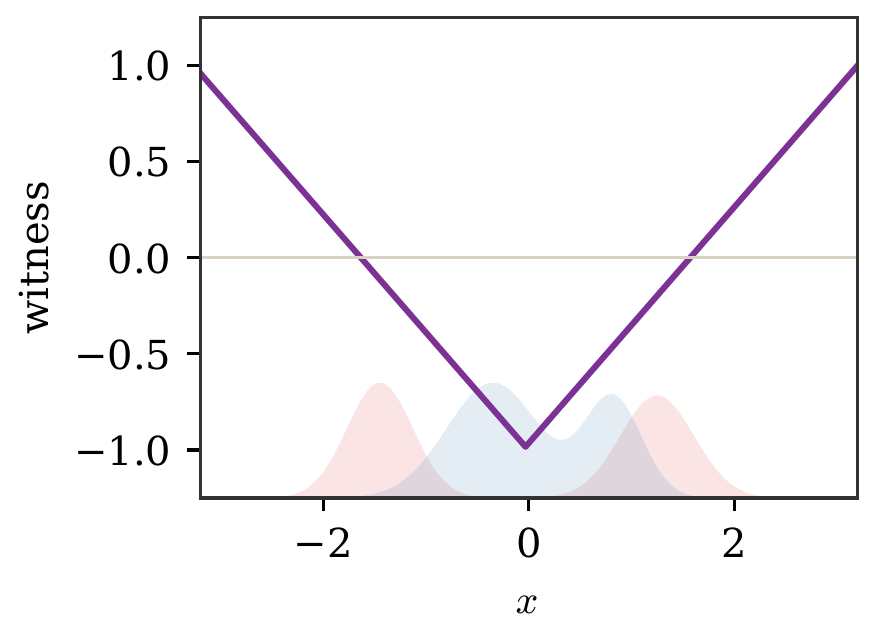
3. Semi-discrete OT

4. Quantization

5. Learning links

Discrete primal and dual
Discrete Kantorovich primal. For a\in\Sigma_n, b\in\Sigma_m and C\in\mathbb R^{n\times m}, \mathcal L_C(a,b)= \min_{P\geq0} \langle C,P\rangle \quad\text{s.t.}\quad P\mathbb 1_m=a, \quad P^\top\mathbb 1_n=b.
Discrete dual. \mathcal L_C(a,b)= \max_{f\in\mathbb R^n,\ g\in\mathbb R^m} \langle f,a\rangle+\langle g,b\rangle \quad\text{s.t.}\quad f_i+g_j\leq C_{i,j}.
Lagrangian derivation
The Lagrangian of the primal is \langle C,P\rangle+ \langle f,a-P\mathbb 1_m\rangle+ \langle g,b-P^\top\mathbb 1_n\rangle.
Minimizing over P\geq0 gives a finite value if and only if C_{i,j}-f_i-g_j\geq0\quad\forall i,j.
This yields the dual constraints f_i+g_j\leq C_{i,j}.
Complementary slackness
Primal-dual contact. If P and (f,g) are optimal, then P_{i,j}>0\quad\Longrightarrow\quad f_i+g_j=C_{i,j}.
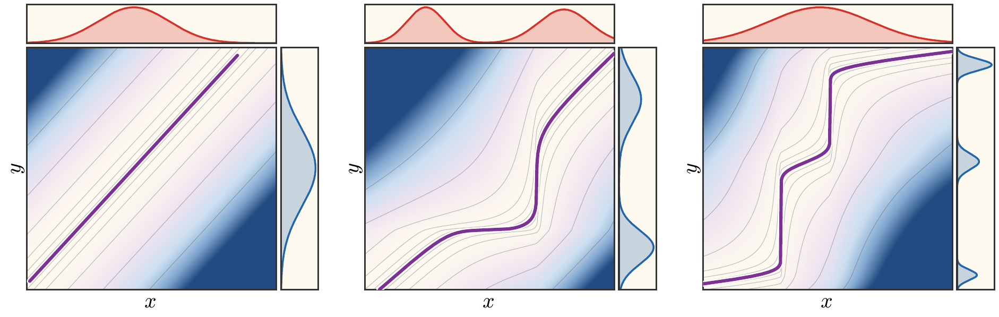
Discrete dual witnesses
Dual variables are not just algebraic multipliers: they are certificates explaining which transport edges can be active.
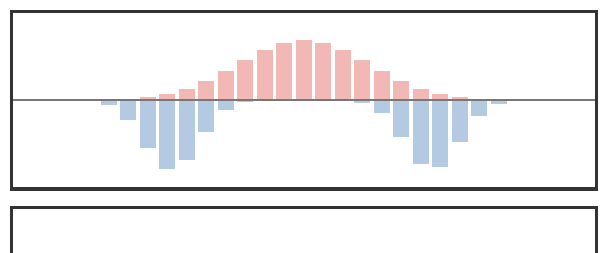
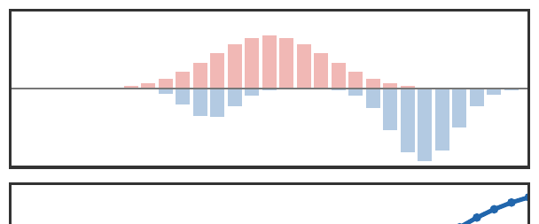
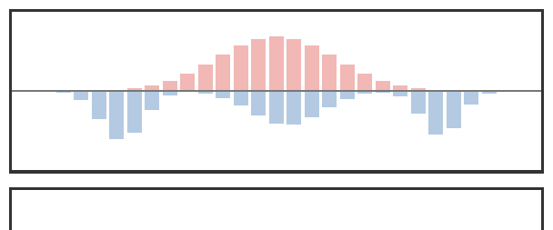
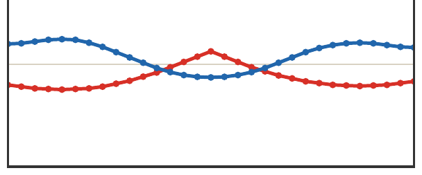
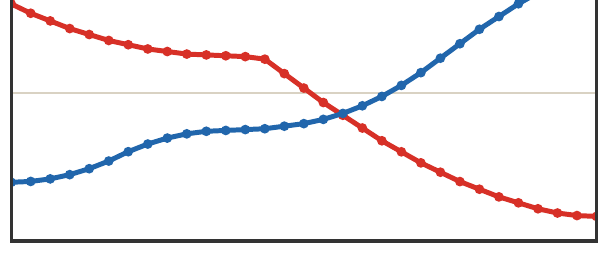
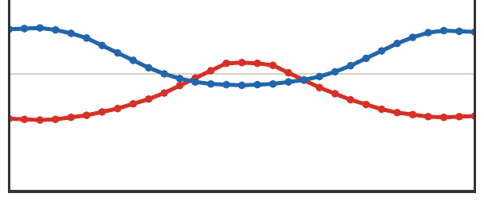
Continuous duality
Kantorovich duality. On Polish spaces, for a lower-semicontinuous cost c bounded from below, \mathcal L_c(\alpha,\beta) = \sup_{f,g} \int f\,d\alpha+ \int g\,d\beta \quad\text{s.t.}\quad f(x)+g(y)\leq c(x,y).
Here “Polish” means complete and separable after choosing a compatible metric. This is the infinite-dimensional analogue of the finite LP dual.
Continuous potentials
For quadratic cost in one dimension, optimal potentials encode the monotone transport map through their derivatives.
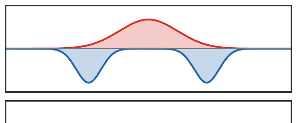
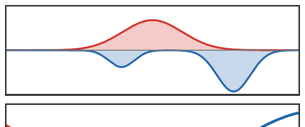
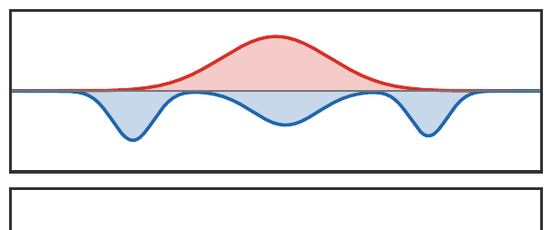
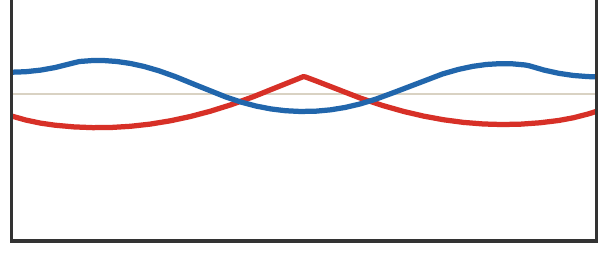
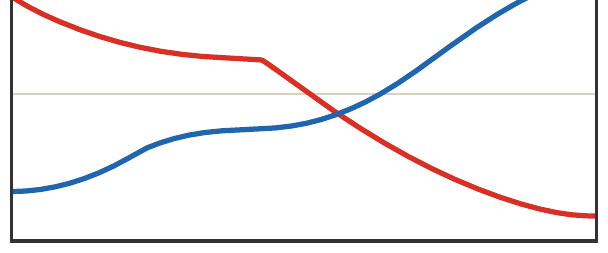
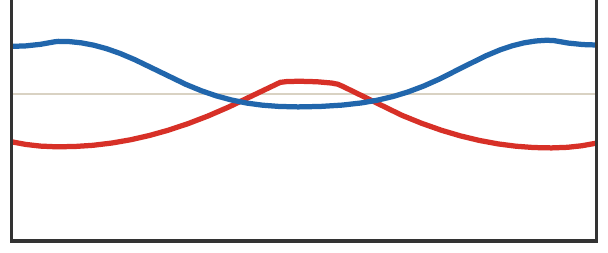
c-transform
c-transform. For a function f on X, define f^c(y)=\inf_{x\in X}\big(c(x,y)-f(x)\big). Similarly, for g on Y, g^{\bar c}(x)=\inf_{y\in Y}\big(c(x,y)-g(y)\big).
The dual can be optimized by replacing one potential by the largest admissible companion.
c-concavity
Reduction to one potential. At optimum one can impose g=f^c, \qquad f=g^{\bar c}. Thus dual potentials are fixed points of alternating c-transforms, up to non-uniqueness.
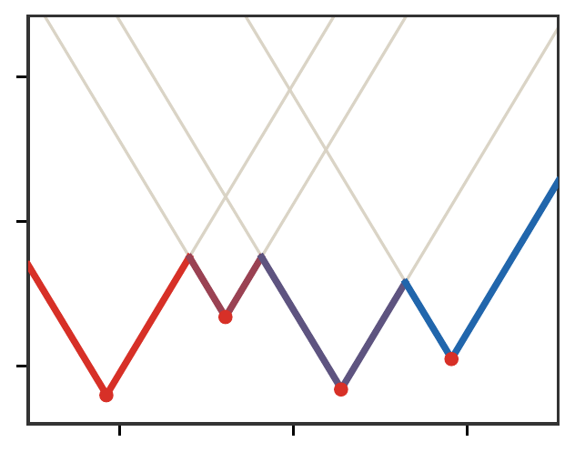
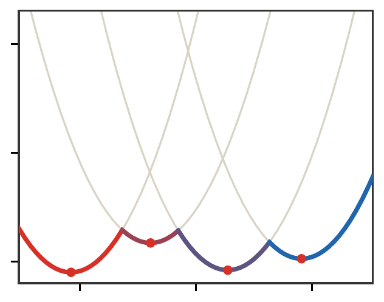
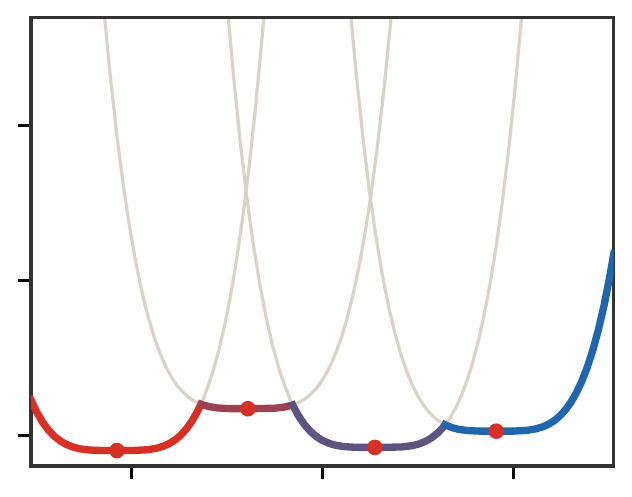
Triple c-transform closure
The identity f^{ccc}=f^c explains why alternating c-transforms stabilize.
Closure identity. For the c-transform, one always has f^{ccc}=f^c, with the appropriate alternation between X and Y.
Proof idea: the inequality f^{cc}\geq f implies f^{ccc}\leq f^c, while applying the defining inequality of the c-transform in the reverse direction gives f^{ccc}\geq f^c.
Interactive: changing the cost exponent
The c-transform closes a potential under the constraint f(x)+g(y)\leq c(x,y). Changing the cost exponent changes the envelope selected by the dual constraint.
Here c_p(x,y)=|x-y|^p and the slider controls p.
Alternating c-transforms
Alternating minimization in the dual repeatedly closes potentials by c-transforms:
Alternating c-transform closure. Input: initial source potential f.
Output: dual feasible potentials (f,g) after stabilization.
- Set an initial source potential f.
- Repeat the closure updates g\leftarrow f^c,\qquad f\leftarrow g^{\bar c}.
- Stop when the potentials are numerically stable.
Useful warning: this reveals the dual structure, but it is not by itself a fast generic OT solver.
c-transform closure geometry
The source and target closures can be viewed as envelopes of admissible potentials.
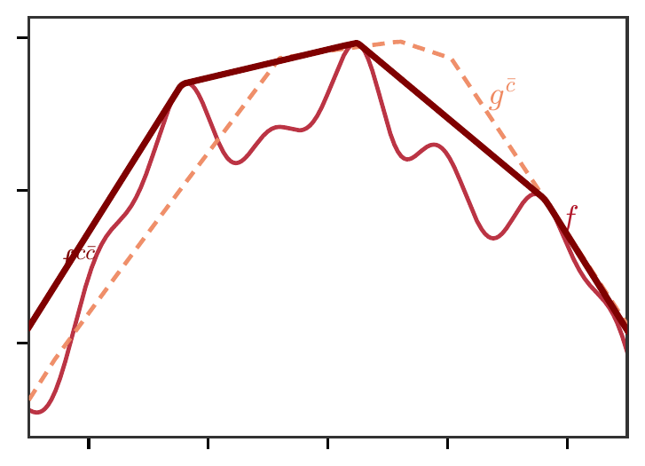
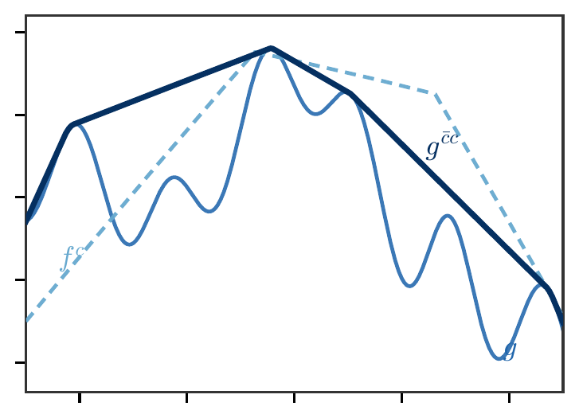
Existence of dual optimizers
Lipschitz compactness principle. When the cost is Lipschitz on compact supports, optimal potentials can be chosen uniformly Lipschitz. Arzela-Ascoli compactness then yields an optimizer.
This proof idea is important because the dual problem is over functions, not finite-dimensional vectors.
Roadmap: Wasserstein-1 and integral probability metrics
1. Duality
2. Wasserstein-1 and IPMs
3. Semi-discrete OT
4. Quantization
5. Learning links
Kantorovich-Rubinstein formula
For c(x,y)=d(x,y), the dual simplifies dramatically.
Wasserstein-1 duality. W_1(\alpha,\beta)= \sup_{\operatorname{Lip}(f)\leq1} \int f\,d(\alpha-\beta). Here \operatorname{Lip}(f)=\sup_{x\neq y}\frac{|f(x)-f(y)|}{d(x,y)}.
The witness f is a 1-Lipschitz discriminator between the two measures.
Wasserstein-1 as a norm
Norm viewpoint. On signed measures with zero total mass, \|\alpha-\beta\|_{W_1}:=W_1(\alpha,\beta) is a norm whenever the ground metric is fixed.
This places W_1 among dual norms defined by classes of test functions.
Integral probability metrics
Integral probability metric. Given a symmetric class of test functions \mathcal F, D_\mathcal F(\alpha,\beta)= \sup_{f\in\mathcal F}\int f\,d(\alpha-\beta).
Examples include total variation, Wasserstein-1, bounded-Lipschitz distances, and MMDs.
Dual witnesses compared
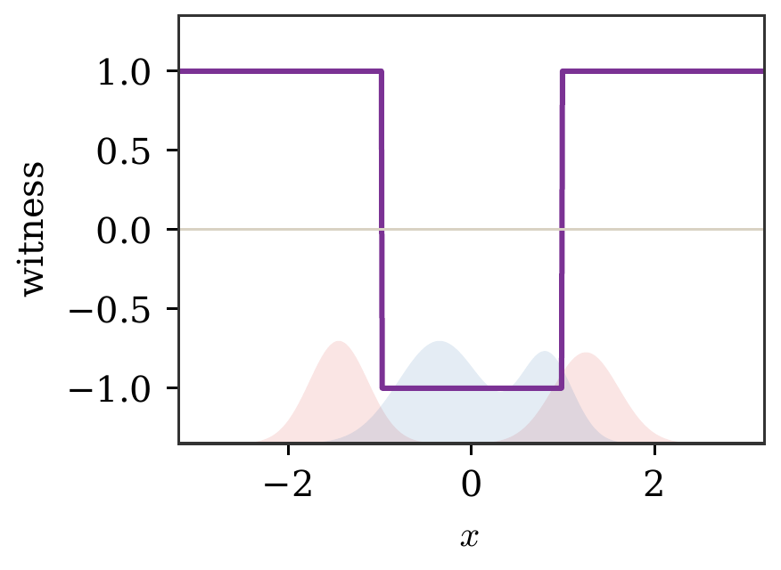

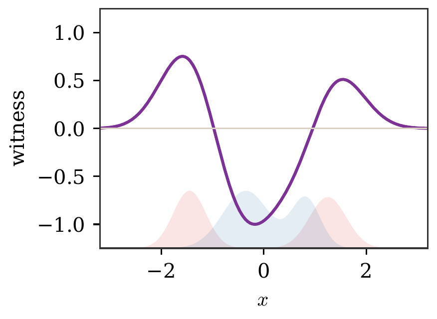
Different function classes produce different witnesses and therefore different notions of discrepancy.
Wasserstein-1 on Euclidean domains
For smooth f on Euclidean domains, \operatorname{Lip}(f)\leq1 is equivalent to \|\nabla f(x)\|\leq1.
This connects W_1 to Beckmann’s continuous flux formulation: W_1(\alpha,\beta)= \min_{m}\int \|m(x)\|\,dx \quad\text{s.t.}\quad \operatorname{div}m=\alpha-\beta.
W1 on surfaces and subdomains
The same Beckmann idea extends beyond flat Euclidean grids by replacing gradients and divergence with their geometric counterparts.
Geometric message. On meshes, surfaces, or subdomains, W_1 can be computed as a flow constrained by the geometry. Graph discretizations are the simplest finite-dimensional version of this idea.
Graph flows are the simplest discrete proxy for this geometric formulation.
Wasserstein-1 on graphs
On a graph, the Beckmann formulation becomes a sparse network-flow problem over edges: \min_{q}\sum_{e} w_e|q_e| \quad\text{s.t.}\quad Dq=a-b. Here D is the signed vertex-edge incidence matrix and q_e is the oriented mass flux on edge e.
This can be much smaller than a full pairwise Kantorovich LP.
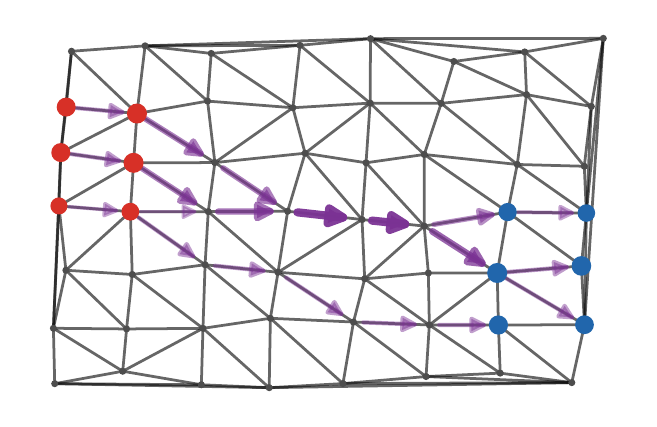
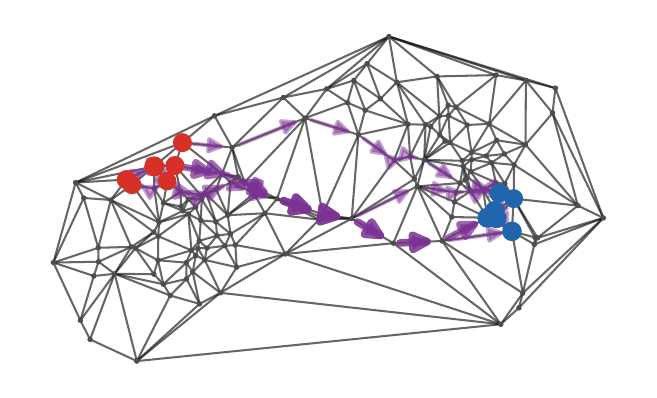
Graph flow visualization
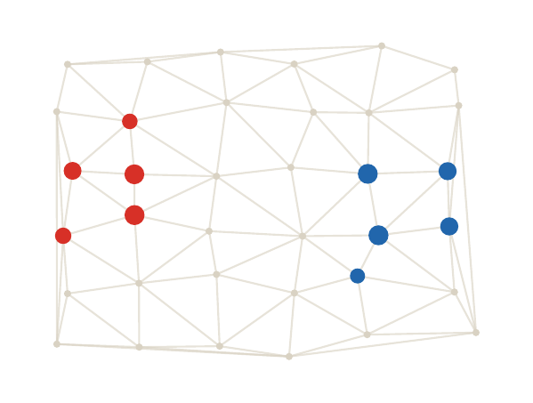
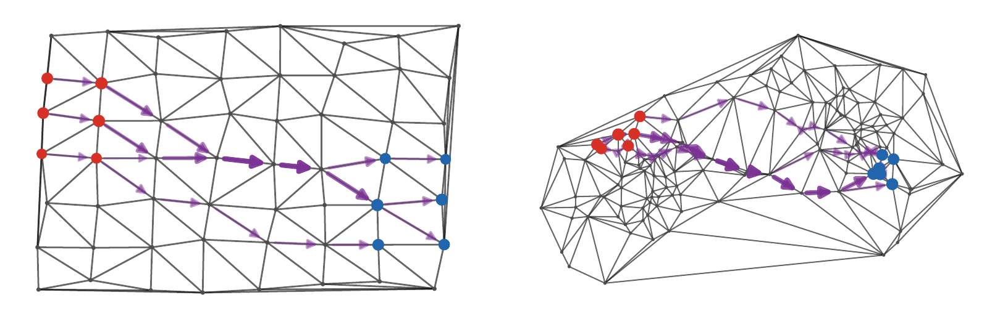
The edge flow is the sparse object that transports positive mass to negative mass through the graph geometry.
WGAN viewpoint
Example: Wasserstein GAN. A generator g_\theta can be trained by minimizing \min_\theta W_1((g_\theta)_\#\zeta,\beta) = \min_\theta\sup_{\operatorname{Lip}(f)\leq1} \mathbb E f(g_\theta(Z))-\mathbb E f(Y). The discriminator is a parametrized approximation of a 1-Lipschitz Kantorovich potential.
This is the machine-learning face of Kantorovich-Rubinstein duality.
Roadmap: semi-discrete OT
1. Duality
2. Wasserstein-1 and IPMs
3. Semi-discrete OT
4. Quantization
5. Learning links
Semi-discrete setting
Semi-discrete OT. Let \alpha be a continuous probability measure on \mathbb R^d and \beta=\sum_{j=1}^m b_j\delta_{y_j} be discrete. For quadratic cost, one seeks a partition of the source domain whose cells have masses b_j.
The unknown is not a full coupling matrix but a weighted spatial partition.
Laguerre cells
Laguerre cell. For sites y_j and weights g_j, the cell associated with j is L_j(g)=\{x: \|x-y_j\|^2-g_j\leq \|x-y_k\|^2-g_k\quad\forall k\}.
The semi-discrete map sends every x\in L_j(g) to y_j. Optimal weights are characterized by the mass constraints \alpha(L_j(g))=b_j,\qquad j=1,\ldots,m.
Power diagrams
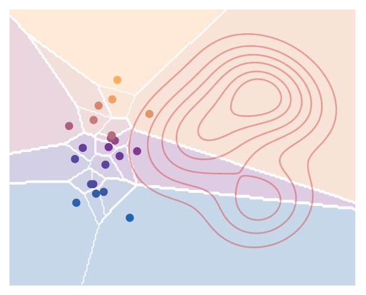
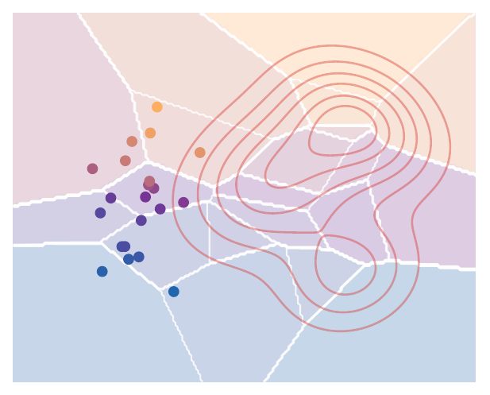
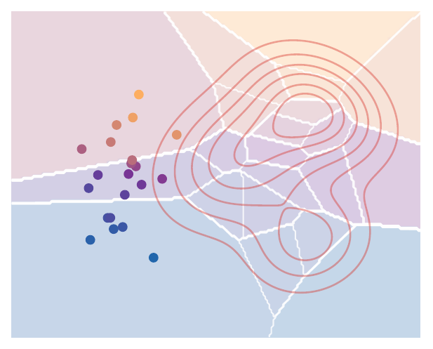
Voronoi cells become Laguerre cells when weights are introduced. The weights tune cell masses.
Interactive: one weight changes one cell
Changing g_j shifts the additive power distance \|x-y_j\|^2-g_j. Increasing g_j makes site j more attractive and expands its Laguerre cell.
Semi-discrete dual
For quadratic cost, the dual can be written as a concave maximization over weights: \max_{g\in\mathbb R^m} \int \min_j\big(\|x-y_j\|^2-g_j\big)\,d\alpha(x) + \sum_{j=1}^m b_j g_j.
Gradient. The gradient component is \frac{\partial}{\partial g_j}=b_j-\alpha(L_j(g)). Thus dual ascent balances Laguerre cell masses.
Weight descent as mass balancing
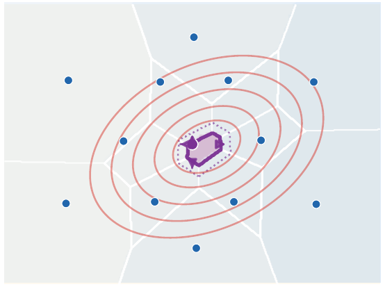
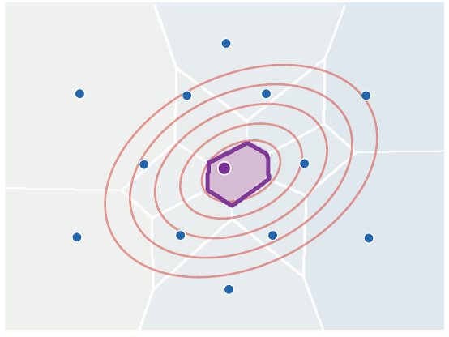
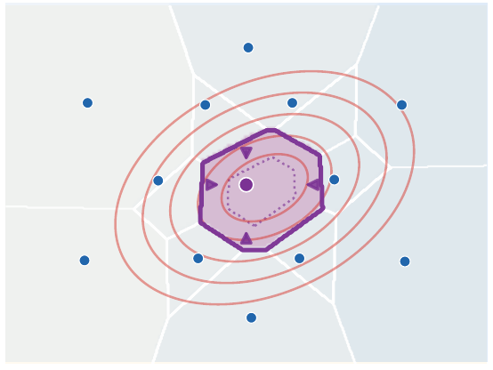
The algorithm updates the weights until every cell has the prescribed mass.
Semi-discrete examples
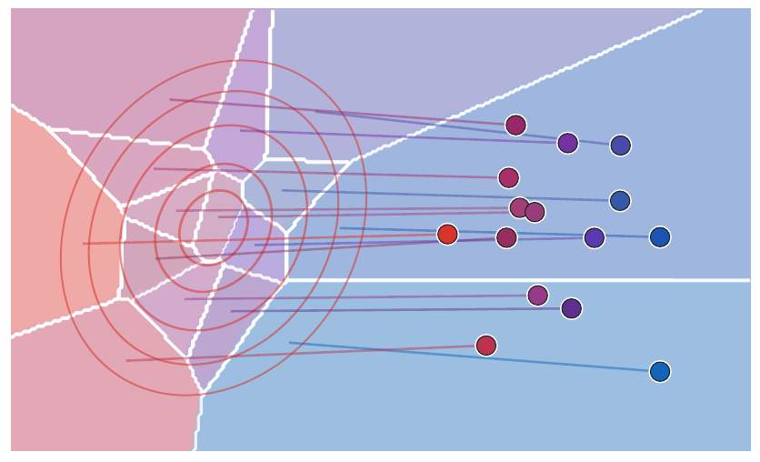
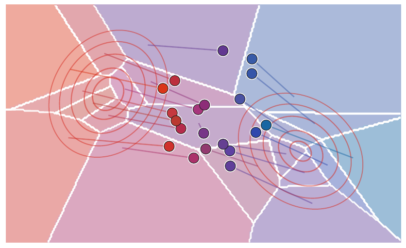
Coloring makes the spatial map visible: each source cell is sent to one target atom.
Practical optimization
Semi-discrete dual ascent. Input: density \alpha, sites y_j, target masses b_j.
Initialize weights g.
Repeat:
L_j(g)=\{x: \|x-y_j\|^2-g_j\leq \|x-y_k\|^2-g_k\},
g_j\leftarrow g_j+\tau\big(b_j-\alpha(L_j(g))\big).
Output: the Laguerre partition and map T(x)=y_j for x\in L_j(g).
Newton and quasi-Newton methods are typically used in high-quality implementations.
Roadmap: optimal quantization
1. Duality
2. Wasserstein-1 and IPMs
3. Semi-discrete OT
4. Quantization
5. Learning links
Quantization problem
Optimal quantization. For a source measure \alpha and m points Y=(y_1,\ldots,y_m), Q_m(\alpha)= \min_{Y,b\in\Sigma_m} W_2^2\left(\alpha,\sum_{j=1}^m b_j\delta_{y_j}\right). For fixed sites Y, this equals \int \min_j\|x-y_j\|^2\,d\alpha(x) when the masses are free.
The goal is to approximate a continuous measure by a small discrete measure.
Fixed versus free masses
If the masses b_j are fixed, semi-discrete OT gives the optimal cells for fixed sites. If the masses are free, the optimal cells are Voronoi cells.
Centroid condition. At an unconstrained local optimum for quadratic cost, y_j=\frac{\int_{V_j(Y)} x\,d\alpha(x)}{\alpha(V_j(Y))}, where V_j(Y) is the Voronoi cell of y_j.
Lloyd algorithm
Lloyd iteration. Input: source measure \alpha, initial sites Y.
Repeat:
- Build Voronoi cells V_j(Y).
- Replace each site by its cell centroid, y_j\leftarrow \frac{\int_{V_j(Y)}x\,d\alpha(x)}{\alpha(V_j(Y))}.
Output: a centroidal Voronoi tessellation.
Lloyd iterations
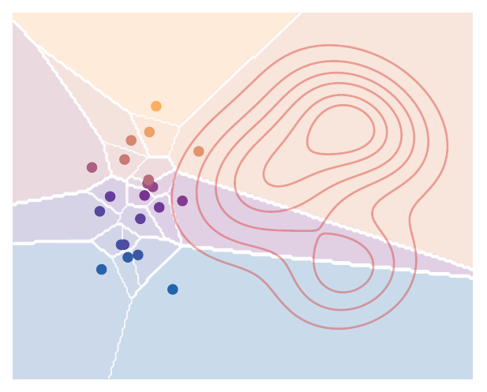
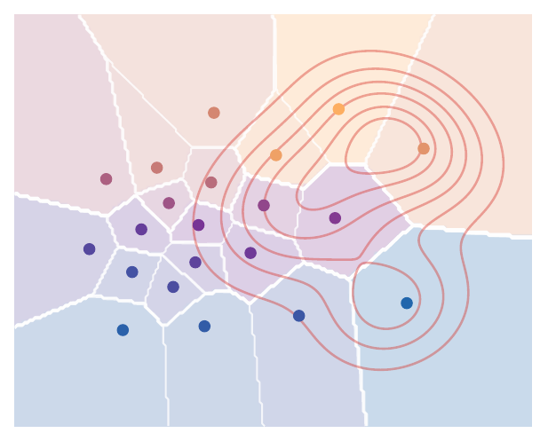
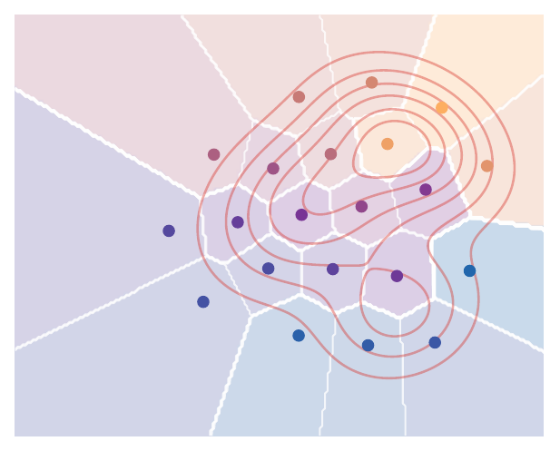
Lloyd descent is simple and robust, but it is nonconvex and can converge to local minima.
Quantization on the line
In one dimension, quantiles give explicit optimal placements for equal masses. This is much better than random sampling for W_2 approximation. For \alpha with quantile F_\alpha^{-1}, y_j=F_\alpha^{-1}\!\left(\frac{j-\frac12}{m}\right) is the canonical equal-mass placement.
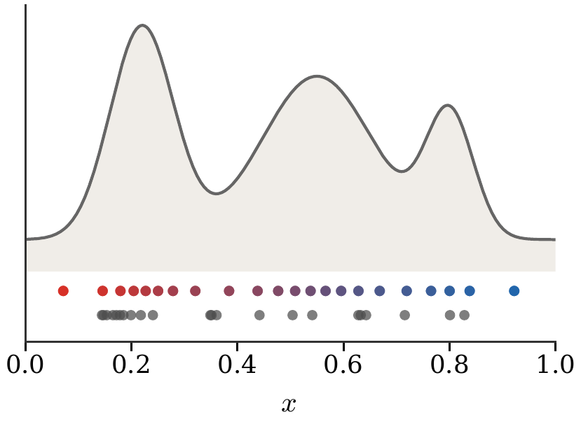
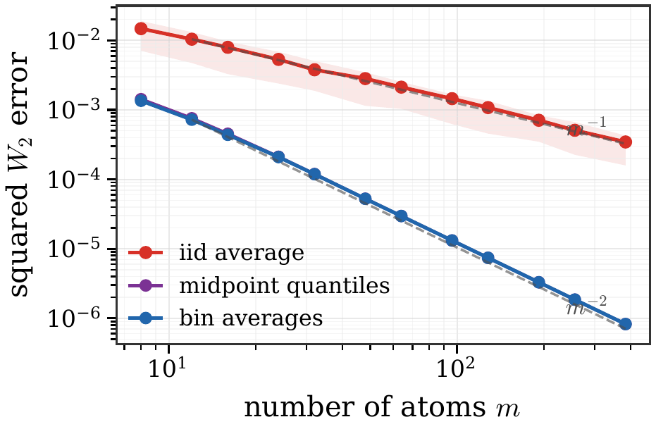
Relaxed Lloyd flow
A slowed-down Lloyd update can be viewed as a continuous-time descent on the quantization energy in configuration space. For small relaxation parameter \eta, y_j^{k+1}=(1-\eta)y_j^k+\eta\,\operatorname{centroid}(V_j(Y^k)).
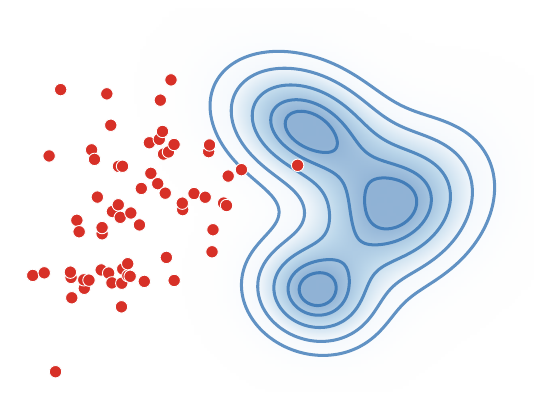
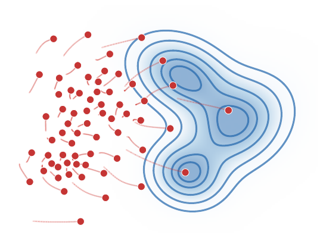
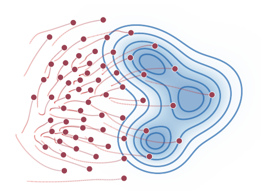
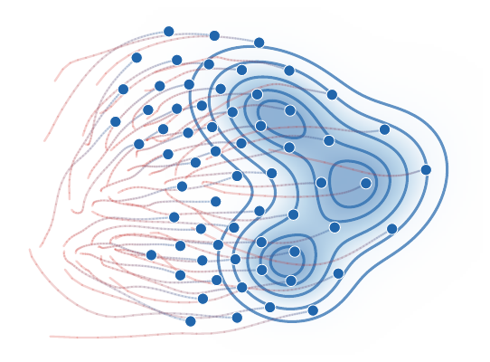
Energy decay
The energy need not be globally convex, but standard Lloyd updates decrease it at each alternating minimization step.
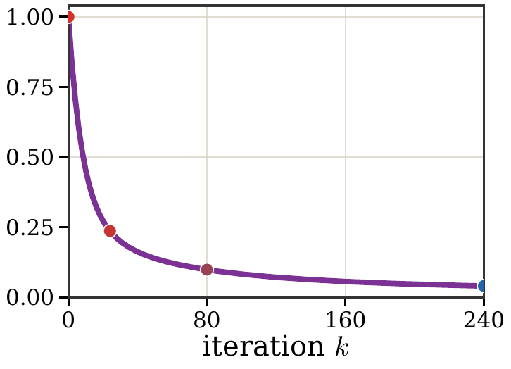
Roadmap: links to learning
1. Duality
2. Wasserstein-1 and IPMs
3. Semi-discrete OT
4. Quantization
5. Learning links
Dual potentials as discriminators
The W_1 dual is the mathematical core of Wasserstein GANs, while other IPMs replace the Lipschitz ball by another function class.
bounded witnesses
Lipschitz witnesses
RKHS witnesses
Semi-discrete maps in applications
Semi-discrete OT appears when a continuous distribution is represented by a finite set of atoms:
- mesh generation and remeshing,
- color and texture processing,
- sampling and quantization,
- clustering with geometric costs,
- scalable approximations of continuous OT.
The computational object is a partition, not a dense coupling.
Linearized OT preview
Dual and semi-discrete ideas also feed linearized OT: fix a reference measure and embed nearby measures by displacement fields.
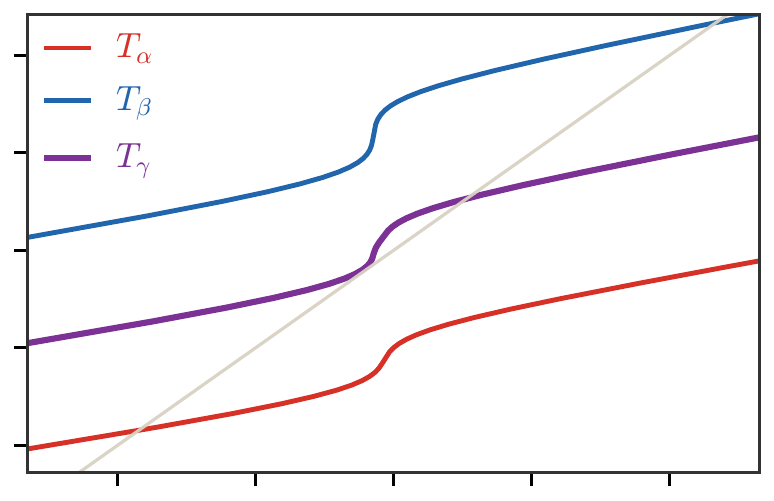
Summary
What this deck establishes. Duality turns transport into potentials. For W_1, these are Lipschitz witnesses. In the semi-discrete quadratic case, they are Laguerre weights defining a power diagram. Quantization and Lloyd algorithms reuse this geometry.
certificates and gradients
Lipschitz witnesses
cells and quantization
Next deck
The next presentation focuses on dynamic optimal transport and flows over probability measures.

OT4ML - Duality and Semi-discrete OT